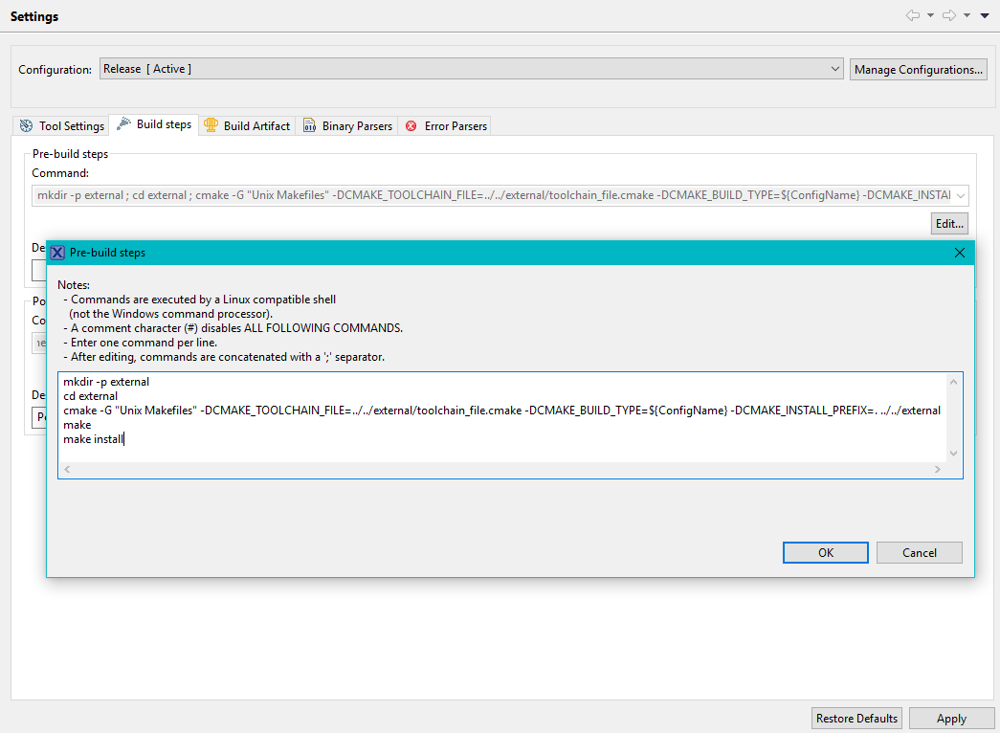
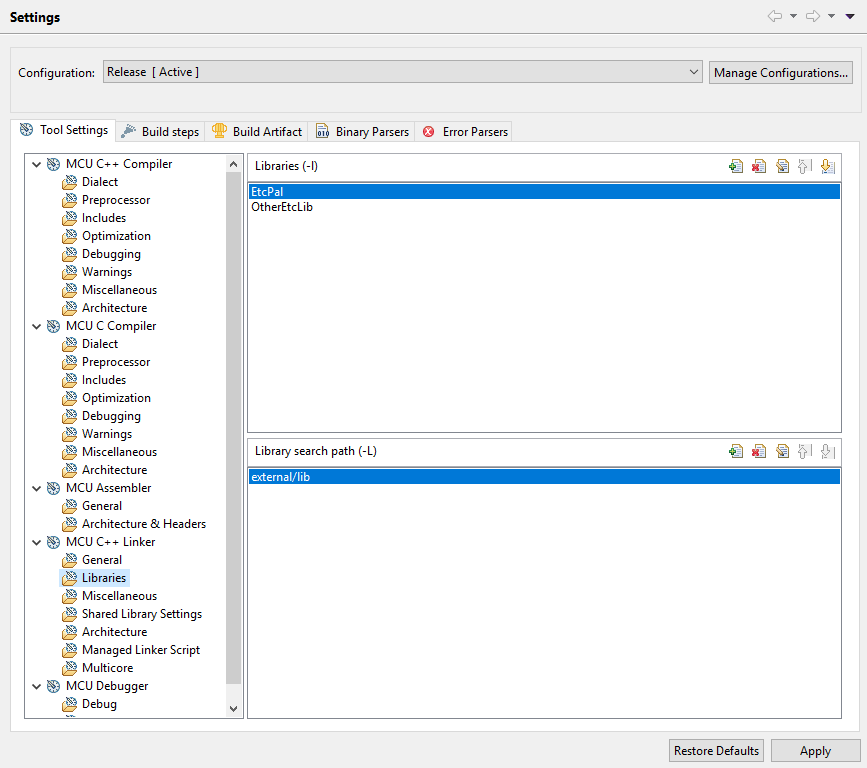

EtcPal is often included as a dependency by ETC libraries which are portable to embedded targets. In this case, there are a couple of options for integrating EtcPal (and its dependent libraries) into your project.
Note on Target Platforms
EtcPal has the notion of an OS target, which is used by OS Abstraction Modules, and a network target, which is used by Network Abstraction Modules. Either of these can be disabled if your target does not have the applicable functionality. Bare-metal embedded apps can still take advantage of EtcPal's Core Modules (and, if you want, their associated C++ Wrappers).
To disable the OS or network modules, simply set the relevant CMake target variable to "none" or the empty string when configuring EtcPal using CMake (see below), or exclude the relevant source files from your build if including EtcPal manually. In the latter case, you must also define ETCPAL_NO_OS_SUPPORT and/or ETCPAL_NO_NETWORKING_SUPPORT in your compile options as applicable.
Methods for Including EtcPal in Your Project
Cross-compile using CMake (recommended)
CMake can be configured to invoke your embedded cross-compilation toolchain directly to build EtcPal and other CMake libraries. This is done by providing a CMake toolchain file when configuring the library with CMake.
The CMake toolchain file sets up CMake to find the tools you use to build your project and uses those tools to build the CMake libraries as well. There are some example toolchain files for various toolchains in the cmake/cross-toolchains directory. If your build tools use an Eclipse-based IDE with an arm-gcc toolchain (a common setup), the file mcuxpresso-k65-freertos-lwip.cmake serves as a good example.
When using CMake to build EtcPal, some target platforms require special targets or configuration to allow EtcPal to find headers from external libraries. Special requirements for specific platforms are found on the pages below:
The method for including EtcPal via CMake is different depending on if your project already uses CMake or not.
If your project is a CMake project
EtcPal can be added to the build using the add_subdirectory() command. Before adding EtcPal as a subdirectory, use the variables ETCPAL_OS_TARGET and ETCPAL_NET_TARGET to set the platforms targeted by EtcPal. Some EtcPal target platforms require special targets to be created before calling add_subdirectory(); examples are shown below.
If your project is not a CMake project
If your project does not use CMake, you can still consume EtcPal and dependent libraries using CMake. Typically this is done by adding a root CMakeLists.txt one level up from the CMake libraries you are building. A few common configurations with example directory structures are listed below.
1. You are including EtcPal on its own.
2. You are including a library that depends on EtcPal from GitHub.
In this case, the other library's CMake configuration will have brought EtcPal in as a Git submodule and added it to the build using add_subdirectory():
3. You are including a library that depends on EtcPal which has been mirrored or copied into another source control provider.
In this case, Git submodules are not available and you must copy the library and EtcPal at the same level in the directory structure. The dependent library's CMake configuration will find EtcPal in this location.
The above configuration is also useful when you are using multiple libraries which all depend on EtcPal.
The CMakeLists.txt contains enough information to build and install the libraries for use by your main project toolchain. In this example, we are targeting FreeRTOS and lwIP. The CMakeLists.txt would contain the following:
toolchain.cmake would contain information on your build toolchain as described above.
To integrate building these libraries into your project, it's convenient to configure and build the libraries as a pre-build step in your existing toolchain. This example uses NXP's MCUXpresso IDE, an Eclipse-based IDE similar to many other embedded toolchains. Conveniently, this IDE has a GNU Make toolchain available on the PATH while executing pre- and post-build steps, so we can use the Unix Makefiles CMake generator.

The pre-build step is:
and does the following:
- Creates a new directory called "external" in the current build directory
- Configures EtcPal and its dependent libraries using your toolchain file and generates build files in the new directory
- Builds EtcPal and its dependent libraries
- Installs the built headers and artifacts in the new directory
At the end of the pre-build step, you will have artifacts available at a predictable path:
The final step is just to add those paths to your project's include/library paths:


With this configuration, each time you build your project, EtcPal and its dependent libraries will be built if out-of-date and installed to be linked by your project.
Include the sources in your project manually
It's recommended to use CMake to build EtcPal if possible. CMake is EtcPal's native build system; this means that if you consume EtcPal via CMake, and you update to a later version where the list of sources and/or include paths has changed, those changes will be integrated seamlessly into your project without needing to change any settings.
However, if you do not want to use CMake to build EtcPal, you can include the EtcPal sources directly into your project's build system.
There are two sets of sources to include: the platform-neutral sources and the platform-specific sources.
The platform-neutral sources are located at [etcpal_root]/src/etcpal/*.c. The platform-specific sources are located at [etcpal_root]/src/os/[target_platform]/etcpal/*.c. If you have multiple target platforms (for example FreeRTOS and lwIP), you will need to include the sources under both platform folders.
You will also need to update your include paths to include EtcPal's headers. For the public headers, add [etcpal_root]/include/ and [etcpal_root]/include/os/[target_platform]. You will also need to add [etcpal_root]/src/ to your include paths so that EtcPal can find its private headers while it is building.